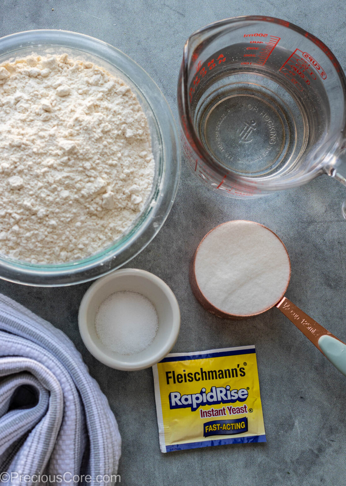
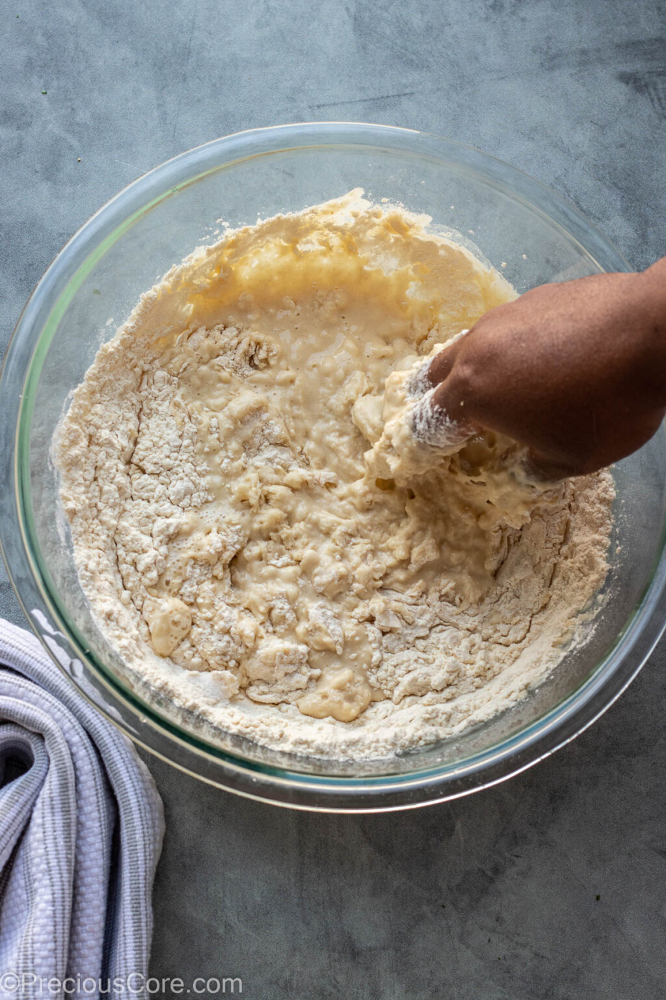
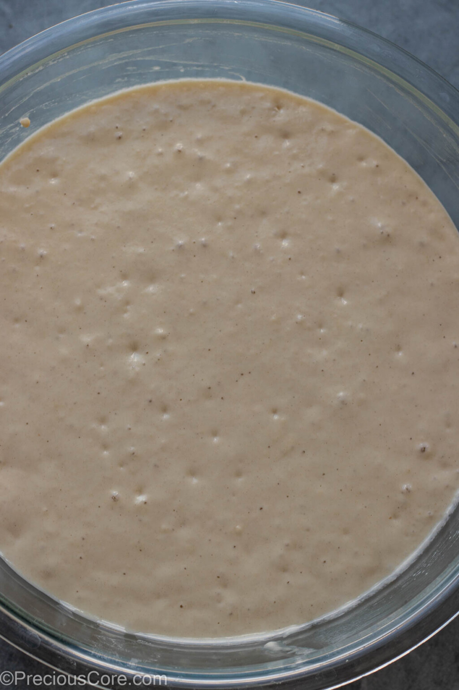
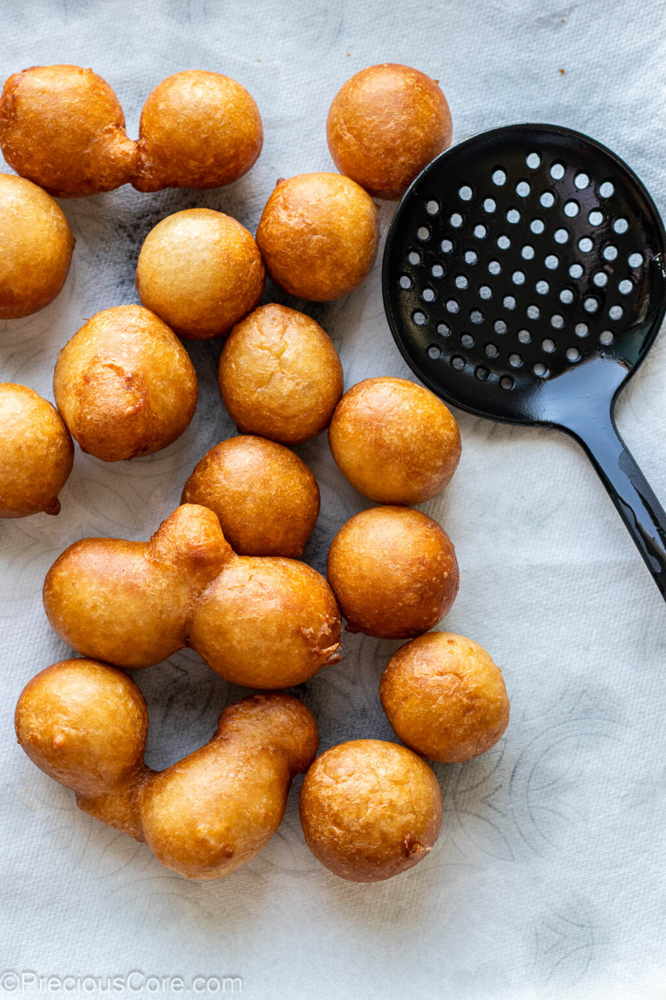
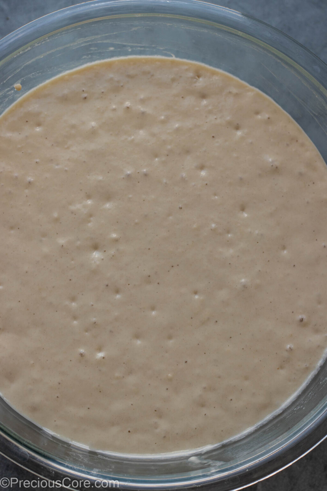
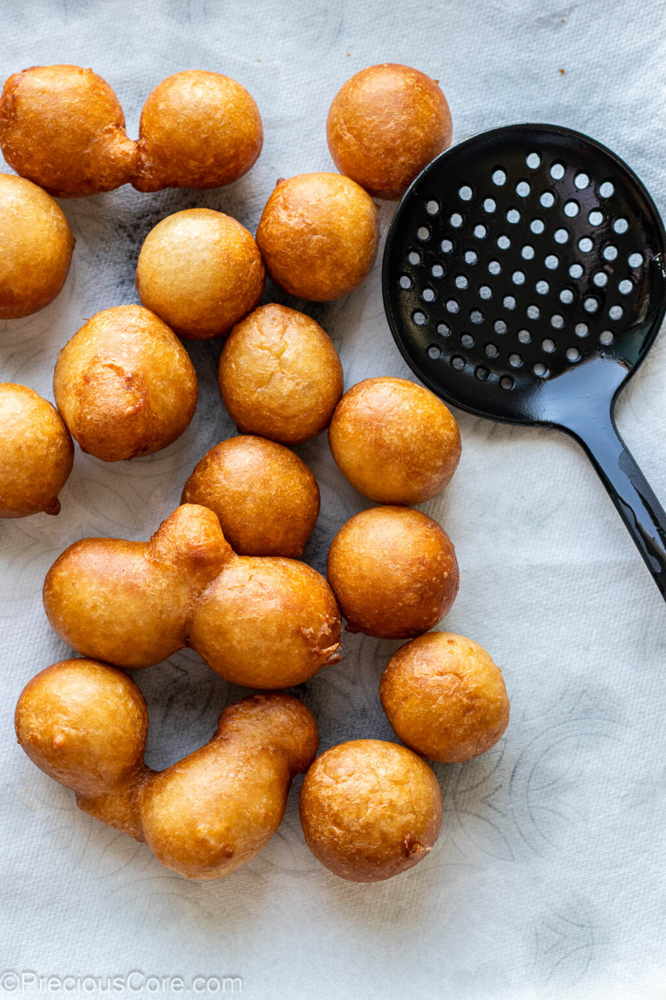

Sample Imagery
  



Source Attribution: https://www.preciouscore.com/puff-puff-101/
A classic Nigerian snack made from light and fluffy fried dough.
Source Attribution: https://getadun.com/blogs/flavor-notes/puff-puff
Budget Bytes focuses on affordable and accessible recipes, making it a great resource for home cooks on a budget. The site features detailed instructions and cost breakdowns for each recipe.
Food Network offers a professional take on the classic recipe, complete with video tutorials. The site is visually appealing and easy to navigate, making it a great resource for both beginners and experienced bakers.
Sally's Baking Addiction provides a detailed recipe with scientific explanations for each step, helping bakers understand the process. The blog format allows for personal touches and variations, making it engaging and informative.
Apple's website is a great example of minimalist design and effective use of white space. The clean layout and high-quality images create a premium feel that could inspire the visual presentation of the recipe page.
Nike's site uses bold typography and dynamic imagery to convey energy and movement. The use of large, impactful visuals could be adapted to showcase the recipe process and final product in an engaging way.
National Geographic's website excels in storytelling through stunning photography and well-organized content. The way they present information in a visually appealing manner could inform how to structure the recipe content for better readability and engagement.